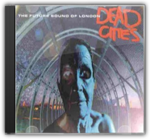
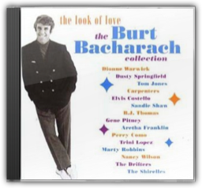

Tom Findlay and Andy Cato have steadily been dismantling their chill-out crown ever since the single "At The River" saw them float into coffee-table ubiquity. Loveboxfinally stretches the duo's eclectic tastes beyond any semblance of continuity or restraint, finishing the job started on last year's Goodbye Country (Hello Nightclub).

Dead Cities
Future Sound Of London
This U.K. duo's landmark ambient techno album Lifeforms(1994) explored lush jungle vistas. Its follow-up opts for a much darker urban nightmare motif that makes it an ideal soundtrack while reading William Gibson. Progressive rockers by any other name, FSOL are highly respected innovators who rate with Orbital as the genre's leading exponent. —Jeff Bateman 
The Annual 2002is in fact a retrospective of 2001, and, coming from the satisfaction-guaranteed Ministry stables, contains all the big tunes from another great year for dance music. From Ibiza 2001 faves Roger Sanchez's "Another Chance", Raven Maize's "Real Life" and Iio's "Rapture" to Ayia Napa's garage flavas such as So Solid Crew's "21 Seconds" and DJ Pied Piper and the Master of Ceremonies'"Do You Really Like It", there's not a duff track to be found. Bringing it right up to date are more recent tracks such as Supermen Lovers'"Starlight", Jean-Jacques Smoothies'"2 People" and Par-T-One's "I'm So Crazy", which should be packing the dance floors well into 2002. 2001 was such a great year that the good people at the Ministry couldn't fit all the tracks onto their usual two discs, so this time you get three for your money, but this doesn't dilute the quality in any way. This is the essential souvenir of the year. —Helen Marquis 
Before the Breeders and Frank Black, there was this Massachusetts quartet, playing hardcore's rush and terseness against the acoustic grit and the minor-key flourish of Latin pop. Their first full-length album is their starkest, harsh and trebly, with the drums right in your face and songs edited to eliminate any note that's not absolutely necessary. Singer Black Francis yelps away about destroyed bodies and the river Euphrates, alternately acting cryptic and crazed. Kim Deal, then calling herself "Mrs. John Murphy", contributes the highlight, "Gigantic", a creepy anthem about childhood voyeurism. The playing is snarly and tricky but unfailingly tuneful, and the hooks come out of nowhere—hiding behind the noise—and bite down hard. —Douglas Wolk |

Strange title but perhaps one that will become increasingly familiar if It's All About The Stragglersearns what might be its deserved status as enduring pop masterpiece. Essentially UK garage with the vocal sheen of US R&B, there is also a wealth of detail and reference that defies easy categorisation. And despite the confusing statistic of nine different vocalists (including Craig David and Robbie Craig) spread over 12 tracks, there is a flow and clarity to Stragglers. Much of it comes from their minimal palette of tight garage beats and pretty keyboard sounds that twinkle like a sonic rendering of fairy-lights. Other elements are dance (both pop and underground) staples: Ibizan guitars, rave-accelerated vocals, tech-house textures and subtle digital arabesques. Every track sounds like a single (four UK Top 10 hits had already been taken from it on its release including number one "Re-Rewind") and all precariously balance a killer pop sensibility with gestures towards a sexier, urban dance floor. Unbeatable stuff—and if a touch child-like (compared to say NIN) then also more than a little sublime. —Tony Marcus

The Look of Love - The Burt Bacharach Collection
Burt Bacharach
The greatest expression of Burt Bacharach's composing and arranging talents is the marvellous string of productions he made with Dionne Warwick and lyricist Hal David for a decade or so starting in 1962. Many of their triumphs are included in this three CD box, along with dozens of other tracks made between 1957 (Marty Robbins's "Story of My Life") and 1996 (Bacharach's collaboration with Elvis Costello on "God Give Me Strength"). The master's blend of froth, deep emotion and challenging musicality provides many masterpieces and a few unfortunate moments: he doesn't have much to show for the 1980s aside from "That's What Friends Are For" and "Arthur's Theme". Its handful of missteps aside, though, The Look of Loveis an essential trove of great pop things. —Rickey Wright |

Liam Clancy
Collection Total:
2121 Items
2121 Items
Last Updated:
Aug 4, 2013
Aug 4, 2013


 Made with Delicious Library
Made with Delicious Library